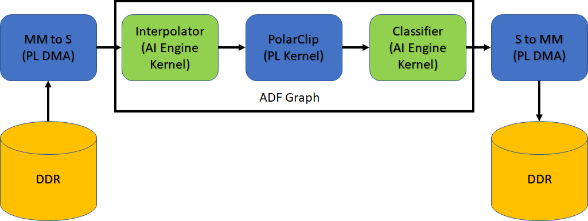

2020.2 Versal™ AI Engine |
Versal System Design Clocking |
Introduction¶
Developing an accelerated AI Engine design for the VCK190, can be done using the Vitis™ compiler (v++). This compiler can be used to compile programmable logic kernels (PL kernels), and connect these PL kernels to the AI Engine and PS device.
In this tutorial you will learn clocking concepts for the Vitis compiler via how to define clocking for ADF Graph PL kernels, PLIO kernels by using clocking automation functionality. The design being used is a simple classifier design:

Pre-requisites for this tutorial are:
Familiarity with the
aiecompilerflowFamiliarity with the
gccstyle command-line compilation
In the design the following clocking steps are used:
| Kernel Location | Compile Setting |
|---|---|
| Interpolator & Classifier | AI Engine Frequency (1GHz) |
polar_clip |
200MHz (aiecompiler, v++ -c, & v++ -l) |
mm2s & s2mm |
150MHz and 100MHz (v++ -c & v++ -l) |
| For more detailed info on this, look for Table 40 of UG1076. |
IMPORTANT: Before beginning the tutorial make sure you have read and followed the Vitis Software Platform Release Notes (v2020.2) for setting up software and installing the VCK190 base platform.
Before starting this tutorial run the steps below:
Set up your platform by running the
xilinx-versal-common-v2020.2/environment-setup-aarch64-xilinx-linuxscript as provided in the platform download. This script sets up theSDKTARGETSYSROOTandCXXvariables. If the script is not present, you must run thexilinx-versal-common-v2020.2/sdk.sh.Set up your
ROOTFS, andIMAGEto point to thexilinx-versal-common-v2020.2directory.Set up your
PLATFORM_REPO_PATHSenvironment variable based upon where you downloaded the platform.
This tutorial targets the VCK190 ES board (see https://www.xilinx.com/products/boards-and-kits/vck190.html). This board is currently available via early access. If you have already purchased this board, download the necessary files from the lounge and ensure you have the correct licenses installed. If you do not have a board and ES license please contact your Xilinx sales contact.
Objectives¶
You will learn the following:
Clocking of the PL kernel in the ADF Graph
CLocking of PL kernels outside the ADF Graph
Introduction of datawidth converters, clock-domain crossing, and FIFOs in
v++
Step 1 - Building ADF Graph¶
The ADF graph has a PL kernel associated with it, polar_clip. The aiecompiler will bring in the interfaces for connectivity (for aiesimulator purpose only). You will have to compile this PL Kernel with v++ for emulation and hardware builds. For clocking PL kernels inside the ADF Graph, this info is necessary, and the --pl-freq is used to determine the appropriate frequency (in MHz).
aiecompiler -target=hw -I ./aie \
--platform=$PLATFORM_REPO_PATHS/xilinx_vck190_es1_base_202020_1/xilinx_vck190_es1_base_202020_1.xpfm \
--pl-freq=200 ./aie/graph.cpp --workdir=./Work
or
make aie
| Flag | Description |
|---|---|
| --target | Target how the compiler will build the graph. Default is hw |
| --include | All the typical include files needed to build the graph |
| --pl-freq | Sets all PL kernels in the graph to this frequency in MHz |
| --workdir | The location of where the Work directory will be created |
Note: Building PL kernels can be an iterative process.
Step 1 - Clocking for PL Kernels in ADF Graph¶
After the graph knows the clocking the PL Kernel is using, you’ll have to make sure the kernel is compiled with the same frequency (this is to make sure the kernel is optimized to the specified frequency). Notice in the next command the --hls.clock. This is used to handle the new frequency, and is explained more Versal ACAP AI Engine Programming Environment - Chapter 13.
Run the following command:
v++ -c --platform $PLATFORM_REPO_PATHS/xilinx_vck190_es1_base_202020_1/xilinx_vck190_es1_base_202020_1.xpfm --hls.clock 200000000:polar_clip -k polar_clip \ ./pl_kernels/polar_clip.cpp -o polar_clip.xo --save-temps
Notice that the
--hls.clockis missing in this command. This is because the clocking is pre-defined in the graph from theaiecompiler.
|Switch/flag|Description|
| --- | --- |
|`-c`|Tells v++ to just compile the kernel|
|`--platform/-f`|Specifies the path to an extensible platform|
|`-k`|The kernel name. This has to match the function name in the corresponding file defining the kernel.|
|`-o`|The output. Because you are building a kernel, the output must be `.xo`|
|`--save-temps/-s`|Saves the generated output process in the `_x` directory|
When complete, you will have a libadf.a and polar_clip.xo files ready to use with v++. A key point to this polar_clip kernel is that it is considered a free running kernel. This means that the host application will never be able to control it, and it is already running and waiting for data at launch. As mentioned in the Overview, data will exit the AI Engine, go to the polar_clip, and then return to the AI Engine.
Step 2 - Clocking the PLIO Kernels¶
An ADF graph communicates with the PL fabric through the means of inputs and outputs defined in the graph. These specific interfaces need to be hooked up to what is called a programmable logic input/output (PLIO) kernel.
In this design you will use two of these kernels called: MM2S and S2MM. These are AXI memory-mapped to AXI4-Stream HLS designs to handle mapping from DDR and streaming the data to the AI Engine. Clocking of these PLIO kernels are separate from the ADF Graph and you’d specify them when compiling the kernel, and when you link the design together.
Run the following commands:
bash v++ -c --platform $PLATFORM_REPO_PATHS/xilinx_vck190_es1_base_202020_1/xilinx_vck190_es1_base_202020_1.xpfm -k mm2s ./pl_kernels/mm2s.cpp \ --hls.clock 150000000:mm2s -o mm2s.xo --save-temps v++ -c --platform $PLATFORM_REPO_PATHS/xilinx_vck190_es1_base_202020_1/xilinx_vck190_es1_base_202020_1.xpfm -k s2mm ./pl_kernels/s2mm.cpp \ --hls.clock 150000000:s2mm -o s2mm.xo --save-temps
Or this command:
```bash
make kernels
```
A brief explanation of the v++ options:
| Flag/Switch | Description |
|---|---|
-c |
Tells v++ to run the compiler. |
--platform |
(required) The platform to be compiled towards. |
-k |
(required) Kernel name. |
--hls.clock |
Tells the Vitis compiler to use a specific clock defined by a 9-digit number (in the previous example above the clock is 100 MHz). Specifying this will help with the compiler make optimizations based on kernel timing. |
-o |
(required) The output, which will always be .xo. |
--save-temps |
(optional) Will create a folder structure and save the compilation of the kernel. |
For additional information, see Vitis Compiler Command.
Once completed, you will have the mm2s.xo and s2mm.xo files ready to be used by v++. The host application will communicate with these kernels to read/write data into memory.
Step 3 - v++ linker – Building the System¶
Now that you have a compiled graph (libadf.a), the PLIO kernels (mm2s.xo and s2mm.xo), and the PL kernel for the graph (polar_clip.xo), you can link everything up for the VCK190 platform.
A few of things to remember in this step:
For PLIO kernels, you need to specify their connectivity for the system.
Specify the clocking per PL/PLIO Kernel
You need to determine the
TARGET: hw or hw_emu.
To link kernels up to the platform and AI Engine, you will need to look at the system.cfg file. For this design the config file looks like this:
[connectivity]
nk=mm2s:1:mm2s
nk=s2mm:1:s2mm
stream_connect=mm2s.s:ai_engine_0.Datain
stream_connect=ai_engine_0.Dataout:s2mm.s
Here you may notice some connectivity and clocking options.
nkThis defines your PL kernels as such:<kernel>:<count>:<naming>. For this design, you only have one of eachs2mmandmm2skernels.stream_connect– This tellsv++how to hook up the previous two kernels to the AI Engine instance. Remember, AI Engine only handles stream interfaces. You can also define a FIFO on this line by adding a depth value to the end.
There are many more options available for v++. For a full list, see the documentation here.
Modify the
system.cfgfile so that the secondstream_connecthas a stream depth of1024. Replace the line withai_engine_0.Dataoutline with this:stream_connect=ai_engine_0.Dataout:s2mm.s:1024Keep this file open for now.
The data output of the AI Engine is at 32-bit, and at a high clock frequency. To reduce the possibilities of dropping data, you can attach the
s2mmkernel to the AI Engine with a larger datawidth (eg. 64-bits) and the clock frequency tos2mmto keep relative bandwidth the same. To do this the Vitis Compiler will auto instantiate a Clock Converter block and Datawidth Converter block to make sure connectivity is achieved.Open the
s2mm.cppin./pl_kernelsto see that the line23has 64-bit defined for both input and output.
Because the
s2mmkernel is running slower than the AI Engine output, you need to override the clock provided to it in Step 2. That was just for kernel compilation, and linking is to make sure that clock is connected correctly. In thesystem.cfgfile uncomment these lines:[clock] freqHz=100000000:s2mm.ap_clk tolerance=1000000:s2mm.ap_clk
Here you are telling the
v++linker to override the default clock frequency to 100MHz for thes2mmkernel, and setting the clock tolerance to 1MHz. By setting a tolerance you are giving the linker a better chance to make sure a clock can be generated and meet your bandwidth.With the changes made you can now run the following command:
v++ --link --target hw --platform $PLATFORM_REPO_PATHS/xilinx_vck190_es1_base_202020_1/xilinx_vck190_es1_base_202020_1.xpfm s2mm.xo \ mm2s.xo polar_clip.xo ./aie/libadf.a --config system.cfg \ --save-temps -o tutorial1.xclbin
| Flag/Switch | Description |
| --- | --- |
| `--link` | Tells v++ that it will be linking a design, so only the *.xo and libadf.a files are valid inputs |
| `--target` | Tells v++ how far of a build it should go, hardware (which will build down to a bitstream) or hardware emulation (which will build the emulation models) |
| `--platform` | Same from the previous two steps |
| `--config` | This allows you to simplify the `v++` command-line if it gets too unruly and have items in an ini style file. |
When the linking is complete you can view what the design looks like in the Vivado® tools. Navigate to
_x/link/vivado/vpl.Run the command in the terminal:
vivado -source openprj.tclWhen the tool is open, locate the button on the left in the Flow Navigator and click, “Open Block Design”. You should see an output similar to the following figure. (The following figure has reduced nets visible to see the added FIFO, Datawidth Converter, and Clock Converter).

IMPORTANT: Do not change anything in this view. This is only for demonstration purposes.
From the changes made above, you will notice a new clock, a Datawidth Converter, Clock Converter, and a new FIFO on the
s2mmkernel.Do note that if you change a kernel or connectivity you have to re-run v++ linker.
NOTE: Any change to the system.cfg file can also be done on the command-line. Make sure to familiarize yourself with the Vitis compiler options by referring to the documentation here.
IMPORTANT: Clocking for ADF Graph and PL Kernels follow a few rules. One, PL Kernels that are inside the ADF Graph will have to have their clock specified in three locations: Graph creation, v++ kernel compilation, and lastly in v++ linker. For PL Kernels outside the ADF Graph, only: v++ kernel compilation and v++ linker.
Step 4 - Compiling Host Code¶
When the v++ linker is complete, you can compile the host code that will run on the Linux that comes with the platform. Compiling code for the design requires the location of the SDKTARGETSYSROOT, or representation of the root file system, that can be used to cross-compile the host code.
Open
./sw/host.cppand familiarize yourself with the contents. Pay close attention to API calls and the comments provided.Do take note that XRT (Xilinx Runtime) is used in the host application. This API layer is used to communicate with the programmable logic, specifically the PLIO kernels for reading and writing data. To understand how to use this API in an AI Engine application refer to the “Programming the PS Host Application” of UG1076.
The output size of the kernel run is half of what was allocated earlier. This is something to keep in mind. By changing the
s2mmkernel from a 32-bit input/output to a 64-bit input/output, the kernel call will be adjusted. If this is not changed, it will hang because XRT is waiting for the full length to be processed when in reality half the count was done (even though all the data will be present). In thehost.cpplook at line 117 and 118 and comment them out. You should have uncommented the following line:xrtRunHandle s2mm_rhdl = xrtKernelRun(s2mm_khdl, out_bohdl, nullptr, sizeOut/2);
Open the
Makefile, and familiarize yourself with the contents. Take note of theGCC_FLAGS, andGCC_LLIBS.GCC_FLAGSShould be self-explanatory that you will be compiling this code with C++14.GCC_LLIBSHas the list of all the specific libraries you will be compiling and linking with. This is the minimum list of libraries needed to compile an AI Engine application for Linux.
Close the makefile and run the command:
make host.
With the host application fully compiled, you can now move to packaging the entire system.
Step 5 - Packaging Design and Running on Board¶
To run the design on hardware using an SD card, you need to package all the files created. For a Linux application, you must make sure that the generated .xclbin, libadf.a, and all Linux info from the platform are in an easy to copy directory.
Open the
Makefilewith your editor of choice, and familiarize yourself with the contents specific to thepackagetask.In an easier to read command-line view, here is the command:
v++ --package --target hw --platform $PLATFORM_REPO_PATHS/xilinx_vck190_base_202020_1/xilinx_vck190_base_202020_1.xpfm \ --package.rootfs ${ROOTFS} \ --package.kernel_image ${IMAGE} \ --package.boot_mode=sd \ --package.image_format=ext4 \ --package.defer_aie_run \ --package.sd_file host.exe \ tutorial1.xclbin libadf.a
NOTE: Remember to change the
${ROOTFS}and${IMAGE}to the proper paths.Here you are invoking the packaging capabilities of v++ and defining how it needs to package your design.
| Switch/Flag | Description |
| --- | --- |
| `--package.rootfs` | This specifies the root file system to be used. In the case of the tutorial it is using the pre-built one from the platform. |
| `--package.kernel_image` | This is the Linux kernel image to be used. This is also a using a pre-built one from the platform. |
| `--package.boot_mode` | Used to specify how the design is to be booted. For this tutorial an sd_card will be used, and it will create a directory with all the contents needed to boot from one. |
| `--package.image_format` | Tells the packager the format of the Kernel image and root file system. For Linux, this should be `ext4`. |
| `--package.defer_aie_run` | This tells the packager than when building the boot system to program the AI Engine, but to stop execution. In some designs, you do not want the AI Engine to run until the application is fully loaded. |
| `--package.sd_file` | Specify this to sell the packager what additional files need to be copied to the sd_card directory and image. |
Run the command:
make packageWhen the packaging is complete do an
cd ./sw && lsand notice that several new files were created, including thesd_carddirectory.Format the SD card with the
sd_card.imgfile.
When running the VCK190 board, make sure you have the right onboard switches flipped for booting from the SD card.
Insert the SD card and turn on the board.
In an attached monitor and keyboard, wait for the Linux command prompt to be available.
Run the following commands:
dmesg -n 4 && echo "Hide DRM messages..." cd /mnt/sd-mmcblk0p1 export XILINX_XRT=/usr
To run your application enter the command:
./host.exe a.xclbinYou should see a TEST PASSED which means that the application ran successfully!
IMPORTANT: To rerun the application you need to power cycle the board.
Challenge (Optional)¶
Build the design for Hardware Emulation¶
Modifying the target for both Step 3 and Step 4 link and package a design for hardware emulation and run such emulation with the generated script, launch_hw_emu.sh.
Summary¶
In this tutorial you learned the following:
Adjusted clocking for PL Kernels and PLIO Kernels
How to modify the
v++linker options through command-line and the config fileLearned how datawidth converters, clock-domain crossing, and FIFOs are inserted in
v++How to run an AI Engine application on a VCK190 board
© Copyright 2020 Xilinx, Inc.
Licensed under the Apache License, Version 2.0 (the “License”);
you may not use this file except in compliance with the License.
You may obtain a copy of the License at
http://www.apache.org/licenses/LICENSE-2.0
Unless required by applicable law or agreed to in writing, software
distributed under the License is distributed on an “AS IS” BASIS,
WITHOUT WARRANTIES OR CONDITIONS OF ANY KIND, either express or implied.
See the License for the specific language governing permissions and
limitations under the License.
XD004